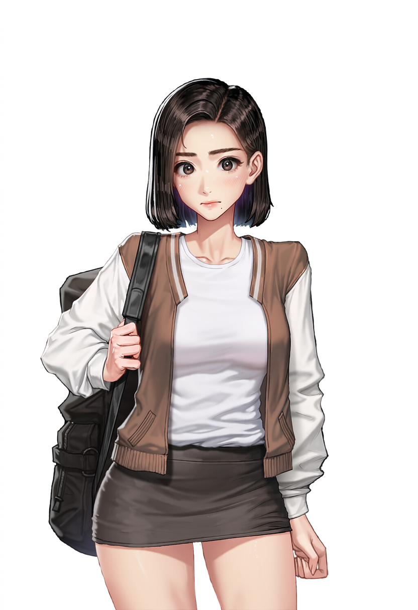

01
STARTING LOCATIONYour Bedroom
MON08:10MORNING
INNER VOICEYou
Morning light spills across the floorboards. The room is quiet, but the first day waiting beyond that door feels anything but ordinary.
What will you do?
Writing the next moment…The story is responding to your action.